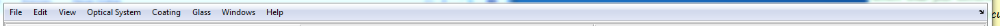

Menu Bar
- It contains Menu items which are used to use different features of the toolbox.

The general structure of the menu items in the menu bar is shown here.
- File:
- New: Opens new surface editor window resetting all the parent window and closing all child windows.
- Open: Opens Windows “Open File” dialog box which can be used to open previously saved optical systems by the toolbox.
- Save: Saves any changes on the current optical system to the current file name or opens Windows “Save As” dialog box if the system is not yet saved.
- Save As: Opens Windows “Save As” dialog box which enables saving current optical system to a .mat file in a user defined location.
- Close: Closes the application.
- Edit:
- System Configuration: Opens the “Optical System Configuration” window.
- View:
- 2D System Layout: Plots the two dimensional cross sectional view of rotationally symmetric optical systems.
- 3D System Layout: Plots the three dimensional system layout for general optical systems.
- Optical System:
- Import:
- From ZMX File: Enables importing .zmx file formats from zemax system files.
- Optical System Analysis:
- Paraxial Analysis: Performs paraxial analysis and displays the result in the command window.
- Scalar Ray Trace: Opens single ray data entry window which enables tracing of a single ray through current optical system.
- Footprint Diagram: Plots footprint diagram of a bundle of ray on a given surface of an optical system.
- Ray Aberration:
- Transverse Ray Aberration: Plots the transverse ray aberration with respect to the chief ray.
- Longitudinal Ray Aberration: Plots the transverse ray aberration with respect to the chief ray.
- Hybrid Diffraction:
- Wavefront @ Exit Pupil: Computes and displays the wavefront surface which corresponds to OPD surface at exit pupil.
- Pupil Apodization: Displays graphical apodization profile of the current system.
- FFT PSF: Computes Fast Fourier Transform based point spread function for a given optical system.
- Polarization:
- Polarization Ray trace: Opens single polarized ray data entry window which enables polarization ray tracing of a single ray through current optical system.
- Polarization Ellipse Map: Shows distribution of polarization ellipse over the pupil area for a given polarized ray at a given surface.
- Polarization Aberration: Displays different graphs showing the polarization aberration of the optical system.
- Coating:
- Coating Data Editor: Displays a window that enables to see, edit, add or remove coating from the coating catalogues used in the current optical system.
- Coating Analysis: Displays different graphs to analyze any coating in the coating catalogue.
- Coating Catalogue:
- New Coating Catalogue: Adds new empty coating catalogue to the default catalogue file folder.
- Glass:
- Glass Data Editor: Displays a window that enables to see, edit, add or remove glass from the glass catalogues used in the current optical system.
- Glass Catalogue:
- New Glass Catalogue: Adds new empty glass catalogue to the default catalogue file folder.
- Import Glass Catalogue:
- Import glass from other formats. Currently Schott catalogue on excel format are supported but in the future more formats shall be defined.
- Help:
- About: Short description of the toolbox.
- User Manual: Open the electronic form of the user manual.
- Programming Reference: Open the programming reference document for the toolbox.
- Source Code Explorer: Used to view source codes of the toolbox in html format.
Created with the Personal Edition of HelpNDoc: Full-featured EBook editor